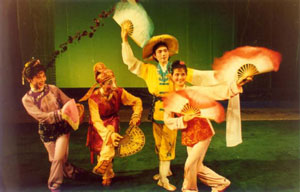

武宁采茶戏是江西省四大汉族戏曲剧种之一。风格独具，有浓厚的乡土气息，历史悠久，为群众喜闻乐见。它产生于传统农事采茶之中，并在长期的发展演变中形成了相对完备、固定的体系。武宁采茶戏以武宁为中心，广泛流传于修水、瑞昌、永修、德安、九江、奉新、靖安、铜鼓及湖北省的阳新、通山、大冶、黄梅、武穴等县，深受人们喜爱。武宁县采茶戏《梆儿声声》曾在首届国际博兴小戏艺术节上获得银奖和组织奖、编剧奖、表演奖。这是武宁采茶戏首次在国际舞台上获奖。


Copyright ©2016[江西财经职业学院] Powered By [jiangxiangwuning] Version 1.0.0